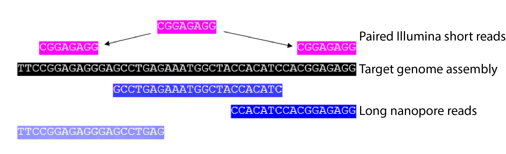

bash <(curl -kSs https://tbdr.lshtm.ac.uk/static/get_nanopore_data.sh) Nanopore Sequencing lecture
Nanopore Sequencing Practical
Introduction
In this session we are going to be looking at data generated by third-generation nanopore sequencing technology. Developed by Oxford Nanopore Technologies (ONT), these platforms, rather than the next-generation 'sequencing-by-synthesis approach', make use of an array of microscopic protein pores set in in an electrically resistant membrane which guide strands of DNA or RNA through them. Each nanopore corresponds to its own electrode connected to a channel and sensor chip, which measures the electric current that flows through the nanopore. When a molecule passes through a nanopore, the current is disrupted to produce a ‘squiggle’. The squiggle is then decoded using basecalling algorithms to determine the DNA or RNA sequence in real time. Oxford Nanopore’s most popular platform is the MinION which is capable of generating single reads of up to 2.3 Mb (2.3 million bases).

The MinION is one of 5 scalable platforms developed by ONT. High-throughput applications such as the GridION and PromethION use an array of nanopore flowcells to produce between 5 to 48 times more data than the MinION alone – outputting up to 48 TB of data in one run. More downscaled solutions such as The Flongle and SmidgION use a smaller, single flowcell to generate data. The MinION is a highly portable sequencing platform, about the size of a large USB flash drive. This technology enables researchers to perform sequencing experiments almost anywhere, providing they have the correct equipment to prepare the DNA libraries and analyse the output data.

A complete sequencing run on the MinION platform can generate 100s of gigabytes of data, and downstream analyses require a significant amount of high-performance compute (HPC) resources – multicore processors and greater availability of RAM. This poses a significant logistical challenge for researchers who want to take advantage of the platform’s portability, in that the availability of HPC or a high-speed internet connection is essential. Over recent years, the integration of GPUs (graphics processing units) in to analysis workflows has accelerated the basecalling process. A typlical nanopore sequencing workflow is detailed in the below diagram.

Library preperation and sequencing reagents
As explained in the lecture at the start of the session, there are numerous considerations to make when choosing a library preparation kit suitable for your sequencing experiment. For this dataset, the NBD 112.24 kit was used. This kit utilises the newer ‘Kit 12’ chemistry, which yields reads of a higher average quality score (Q20+) when compared to its predecessors, such as the LSK 109 kit. The NBD 112.24 kit also allows for the multiplexing of 24 samples through the ligation of barcode oligonucleotide sequences to each strand of genomic DNA in a given sample. To generate the dataset featured in this activity, we purified 200 ng of genomic TB DNA from culture and followed the kit instructions as per manufacturer’s instruction. The sequencing run was performed on the MinION with an R10.4 flow cell .

Activity Briefing
For this session, we will be working with data generated by both the next-generation Illumina (short-read) and third-generation ONT (long-read) platforms. In combining these two formats of sequencing technologies, we can build a hybrid assembly which makes use of the longer but more error-prone reads of ONT platforms to build a contiguous chromosomal scaffold and the shorter less erroneous reads of Illumina platforms for error correction.
The data we will use is

Basecalling
To convert the raw data output produced by the MinION sequencing run in to a usable form we need to perform a process called basecalling. This converts the raw electronic signal which is collected as the DNA passes through the pore, in to base reads – A, C, T or G. To do this we will use a program called Guppy – a software package designed by ONT which uses recurrent neural nets (RNN) to interpret the raw signal, which comes in a proprietary '.fast5' format file produced by the sequencer software and convert it in to the standard .fastq format, for use downstream in our pipeline. Users also have the choice of using the experimental Bonito basecaller which gives the option of training specialised models for specific basecalling applications. As mentioned above, GPUs are used to accelerate the basecalling process. Without a GPU performing basecalling becomes a very slow process, therfore it is advised that users procure a machine with a compatable Nvidia GPU (more information on this here).

Activate the conda environment for this activity, navigate to the cd ~/data/nanopore_activity_tb/nanopore_reads folder in the home directory, and we’ll start the first step.
conda activate nanopore_tb
cd ~/data/nanopore_activity_tb/nanopore_readsUse the ls command to see what is inside this folder. Use head to preview one of the fast5 files. As you might find, it's completely unreadable. This is becuase at this stage, the data is in a binary format representing the squiggle signal we spoke about previously. We need to basecall this data before we can use it.
Basecalling can be performed in a number of ways. There is an option to perform this while sequencing in the MinKNOW GUI package, however this software provides fewer options in the ways basecalling can be completed and is less powerful. Here, we will use Guppy for maximum flexibility. Since the machines we are working on do not have a GPU available we will have to use the two CPU cores available to us. Therefore, we will only basecall a subset (<1%) of the dataset as an example, and in the subsequent steps we will use a pre-basecalled output
Hover over the different elements of the basecalling command to see its function:
guppy_basecaller --config dna_r10.4_e8.1_fast.cfg --barcode_kits SQK-NBD112-24 --trim_adapters --compress_fastq --input_path ~/data/nanopore_activity_tb/nanopore_reads --save_path ~/data/nanopore_activity_tb/nanopore_reads/processing/fast_guppy_out You should now see the bascalling process begin, and a progress bar appear. This may take some time depending on the performance of your machine.

When the process in completed, you will find the basecalled reads in .fastq formatted files. Navigate to the output directory by typing the following in to the terminal:
cd ~/data/nanopore_activity_tb/nanopore_reads/processing/fast_guppy_out/passUse the ls command to see what is inside this folder. This directory holds folders corresponding to each barcode discovered in the demultiplexing process which, in turn, contain the demutiplexed bascalled fastq read files. Use zcat | head to preview one of the compresssed fastq files. Unlike the fast5 files, these are human-readable and contain all of the read data required for downstream analyses. Can you identify any of the common elements of a .fastq format files - similar to the ones you may have encountered in previous sessions? Click here to find out more about the FASTQ format.
Question 1
Basecalling - Quality Control
Before moving on to the analysis steps, it is important to assess the quality of the sequencing output. This helps us understand how successful our sequencing run has been. There are numerous factors which dictate the quality of the output data, spanning between quality of the input material, library preparation to software and hardware failure. We will look at some important metrics produced by the sequencer which will give us a feel for how well the run went.
In order to get the run metrics in to a useful form, we will use an pycoQC to produce a range of plots in a HTML output, which we will use to judge the quality of the sequencing run. Something to note, is that in this activity we will only use a small subset of the sequenced reads, or else the analysis would take all day. This subsetting means that the sequencing telemetry may look inconsistent, when compared to a full run. We will use the data corresponding to barcode08 moving forward
Navigate to the folder containing the demultiplexed barcode08 reads/p>
cd ~/data/nanopore_activity_tb/nanopore_reads/processing/fast_guppy_out/pass/barcode08In this folder we can see numerous compressed fastq.gz files. Let's join them all together to make it easier for us to analyse them by using zcat and gzip to recompress them afterward. The reads will be outputted to the qc folder in the root of the activity folder for the next step
zcat *.fastq.gz | gzip > ~/data/nanopore_activity_tb/qc/barcode08_reads.fastq.gz Navigate to the qc folder
cd ~/data/nanopore_activity_tb/qc/ Firstly, to run pycoQC we need an alignment so that we can obtain coverage statistics. For this, we will use an alternative to the BWA-mem alignment algorithm called minimap2. The usage of minimap2 is identical to that of BWA, so hopefully you should be familiar with the syntax.
minimap2 -ax map-ont ~/data/nanopore_activity_tb/ref/tb_ref.fasta barcode08_reads.fastq.gz | samtools view -S -b - | samtools sort - -o barcode08_mapping.sorted.bam; samtools index barcode08_mapping.sorted.bamNow that the alignment is compete, we can build the QC report.
pycoQC -f ~/data/nanopore_activity_tb/nanopore_reads/processing/fast_guppy_out/.sequencing_summary.txt -a ~/data/nanopore_activity_tb/qc/barcode08_mapping.sorted.bam -o pycoqc_barcode_08_results.htmlfirefox pycoqc_barcode_08_results.htmlBefore continuing, quit the browser by clicking the X in the top right corner of the web-browser window.
Question 2
Question 3
Adapter Trimming
Nanopore library preparation results in the addition of a sequencing adapter at each end of the fragment. Both the template and complement strands to be sequenced carry the motor protein which means both strands are able to translocate the nanopore. For downstream analysis, it is important to remove these adapters. For this we will use Porechop. This program processes all of the reads in our basecalled fastq file, and removes these adapter sequences. Furthermore, the ligation library prep process can result in conjoined reads, meaning an adapter will be found in the middle of an extra-long read. Porechop will identify these, split them and remove the adapters. In addition, if you use a multiplexing kit to maximise sample throughput, this program will split the reads based on the molecular barcode added to each sample. Our dataset only has one sample, so this demultiplexing won't be necessary.
Let's launch porechop and remove the adapters from the basecalled fastq file:
porechop -i ~/data/nanopore_activity_tb/qc/barcode08_reads.fastq.gz -o ~/data/nanopore_activity_tb/qc/barcode08_reads.porechop.fastq.gzKraken QC
Another method of quality control is to check our reads for sequence contamination from other 'off-target' organisms using taxanomic read assignment tools such as Kraken or Centrifuge. This is important in order to firstly, understand how effective your DNA extraction, enrichment and sequencing was. And secondly, to prevent anomalous reads from being incorporated in to assemblies.
Using our basecalled reads we will perform an analysis using Kraken. Kraken is a tool which sifts through each read in a .fastq file and crosschecks it against a database of reads from assigned organisms. The output is a taxonomic assignment of each read, enabling the identification and quantification of any contamination. In this case we will be looking for any reads which do not belong to the TB reference genome.
Let’s navigate to the kraken folder to begin the analysis:
cd ~/data/nanopore_activity_tb/qcThe following line of code is composed of these elements:
Kraken – calling the Kraken executable
kraken --db ~/data/nanopore_activity/kraken/KDB/ - this points kraken to a vast sequence database of relevant microorganisms to cross-check our reads against
--output temp.krak – this argument locates the output file
~/data/nanopore_activity_tb/qc/barcode08_reads.fastq.gz – this argument locates the input file
Type the following command in to the terminal to unleash the Kraken:
kraken --db ~/data/nanopore_activity/kraken/KDB/ --output taxa.krak ~/data/nanopore_activity_tb/qc/barcode08_reads.porechop.fastq.gz 
This file isn't particularly easy to interpret, you can take a look by typing head taxa.kraken. So, we will use a program called Recentrifuge to transform these data in to a more human-readable format.
rcf -k temp.krak -o taxa.krakenTry opening the HTML file generated by recentrifuge in a web browser, what can you tell about the sequencing run? Was is successful? Note - due to constraints with the virtual machine, we have generated an alternative report, which can be loaded using the below command. Copy and paste it in to the terminal. If you have any questions about this, ask a demonstrator.
firefox taxa.kraken.rcf.htmlOur reads look nicely pure, we can see the majority of the reads are from the MTB complex. We can confirm this further by checking the alignment we built earlier for the pycoQC step. Try using samtools flagstat barcode08_mapping.sorted.bam to generate a report for the alignment. Does this agree with the Kraken results?
Question 4
Alignment Visualisation
Now that we have verified a successful sequencing run, our basecalled and trimmed TB read data are ready to go, we will visulise our mapped alignment using Tablet.
tabletUsing the below animation as a guide, open up tablet and load the sorted.bam and the reference.fasta files, then click on the ‘contig’ in the pane on the left side of the screen. You will see a loading bar, then the alignment will be shown. In the left ‘contig’ pane you will fine some metrics associated with this dataset.

Try bringing up some of the reads you have worked with in previous session. Remember to select the appropriate ‘sorted’ .bam file and the correct reference fasta. Does anything strike you about the contrasting features of the data sets? Scrolling downwards in the alignment viewer on Tablet, what do you notice about the ‘structures’ formed by the reads?
Question 4
One of the foremost caveats of nanopore sequencing is the high error rate. It is important that we use programs which are sensitive to that - which is why we used the 'ont2d' argument in the mapping stage. Try switching the colour scheme to ‘Variants’ by using the tab in the top left corner of the interface.

You can take a closer look at the individual bases by zooming in, either by using the sliding bar on the ‘Home’ tab at the top of the screen or by using ‘Ctrl’+Mouse Scroll. The red squares in the ‘Variants’ view represent the mismatched reads.
Assembly
As we have covered in the previous session, denovo assembly techniques can be used to build genome sequences by piecing together a set of reads to form a set of contigs, or in the best case, a whole-chromosome assembly. Luckily, with TB, we only have one chromosome to assemble, so we will use the long nanopore reads we have just cleaned to assemble the TB genome.
Longer reads are beneficial to assembly techniques. They facilitate the closing of gaps in difficult to assemble regions, such as repetitive features. We will use flye, a tool which specialises in long-read assemblies.
flye --nano-hq ~/data/nanopore_activity_tb/qc/barcode08_reads.porechop.fastq.gz --out-dir out_barcode08 --threads 2Now that the assembly has completed, we will asses its contiguity using a tool caller quast